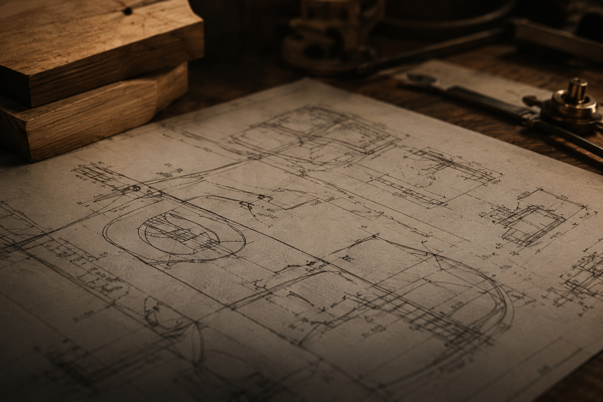
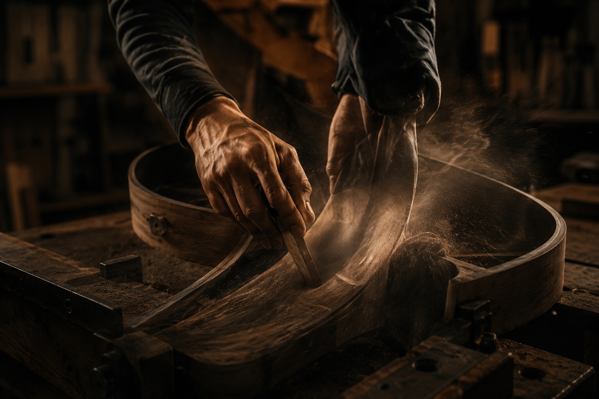
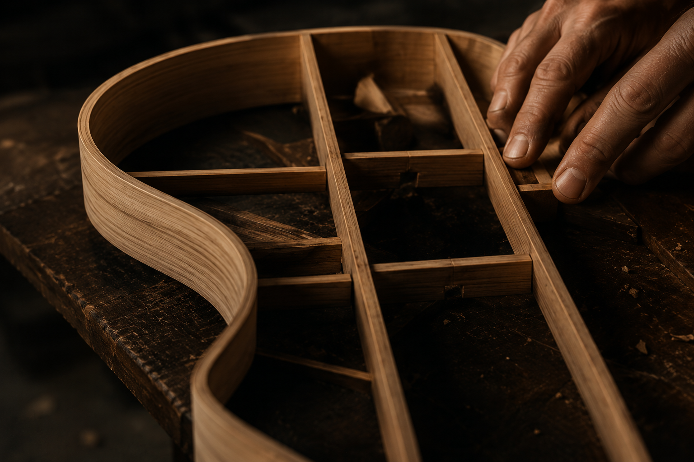
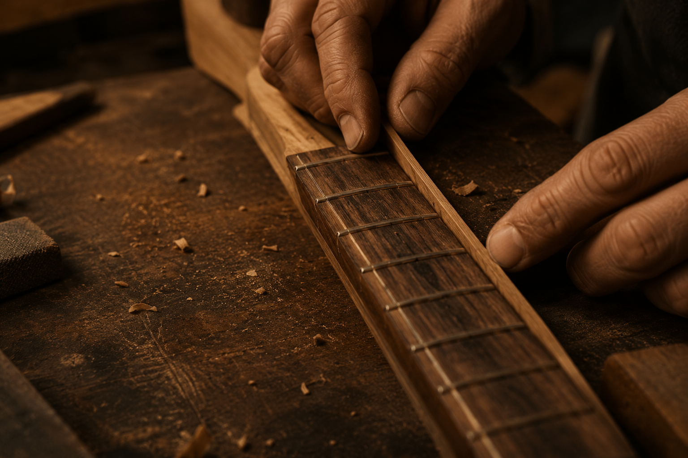
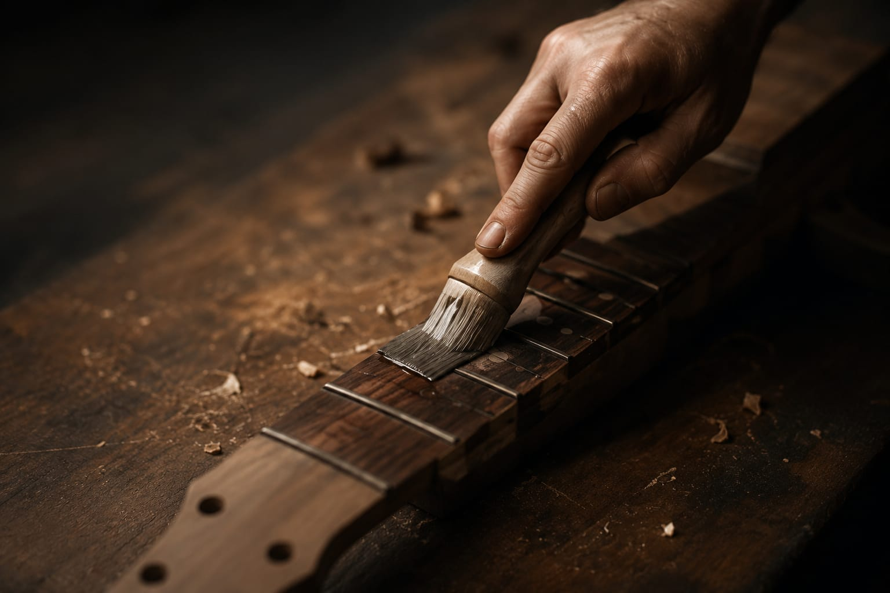

Principiante
DEL PLANO AL SONIDO.
Donde el diseño y el sonido se encuentran.
Aprendé lutheria y descubrí como una idea, trazada en papel, se transforma con tus manos en un instrumento que suena y perdura.
Desliza
El proceso de construccion.
Seis etapas, un mismo objetivo: convertir madera en un instrumento vivo. Pasa el cursor sobre cada fase para conocerla.

01
Diseño
Cada guitarra nace en el papel. Definimos escala, bracing y proporciones antes de tocar una sola tabla.

02
Seleccion de maderas
Elegimos tapa, aros y fondo segun veta, densidad y el caracter sonoro que buscamos lograr.

03
Moldeado
Doblado a calor y molde de aros: la etapa donde la madera plana empieza a tomar volumen.

04
Ensamblaje
Tapa, fondo, aros y mastil se unen con precision milimetrica y prensado tradicional.

05
Calibracion
Se ajustan espesores, trastes y accion de cuerdas hasta encontrar el sonido exacto.

06
Acabado
Lacado, pulido y detalle final: el paso que protege la madera y revela su verdadero brillo.
Cursos para cada nivel.
Desde tu primera herramienta hasta tu propia guitarra terminada.
Intermedio
Construccion de Guitarra Acustica
Intermedio
Reparacion y Calibracion
Avanzado
Acabados Profesionales
El taller — Buenos Aires
El taller, donde nace cada guitarra.
Un espacio equipado con herramientas profesionales, bancos individuales y la guia constante de luthiers con oficio. Aca no hay atajos: se aprende haciendo, con las manos en la madera desde el primer dia.
Cada alumno cuenta con su propio puesto de trabajo, acceso a maderas seleccionadas y acompañamiento personalizado durante todo el curso.
12Puestos de trabajo
+40Herramientas profesionales
8Años de trayectoria
Ramiro Aguirre
Maestro luthier — Fundador
Formado en Espana y con mas de veinte años de oficio, Ramiro fundo la escuela para transmitir una lutheria honesta, atenta al detalle y al sonido. Dicta los cursos de construccion avanzada.
Carla Sosa
Especialista en acabados
Carla se especializa en lacas y acabados franceses. Su ojo para el color y el brillo final convierte cada instrumento en una pieza unica.
Bruno Ferreyra
Reparacion y calibracion
Con taller propio de reparacion desde 2012, Bruno enseña a diagnosticar y devolverle la voz a instrumentos con historia.
Materiales que inspiran.
Maderas seleccionadas, sonidos unicos. Desliza para conocer cada una.
01 / 06
Cedro
Calidez y equilibrio
- Uso
- Tapa armonica
- Sonido
- Calido, respuesta rapida y grave presente
02 / 06
Nogal
Profundidad y caracter
- Uso
- Aros y fondo
- Sonido
- Medios definidos con caracter propio
03 / 06
Caoba
Tradicion y cuerpo
- Uso
- Mastil y aros
- Sonido
- Cuerpo solido, sustain equilibrado
04 / 06
Ebano
Definicion y contraste
- Uso
- Diapason y puente
- Sonido
- Ataque claro y agudos definidos
05 / 06
Arce
Claridad y proyeccion
- Uso
- Fondo y aros
- Sonido
- Brillante, gran proyeccion
06 / 06
Palo Santo
Aroma y belleza natural
- Uso
- Fondo y aros de alta gama
- Sonido
- Graves profundos, armonicos ricos
Proyectos de alumnos.
Instrumentos terminados, construidos de principio a fin en nuestro taller.
Martin Aldao
Lucia Bianchi
Diego Peralta
Sol Herrera
Federico Luna
Valentina Roig
Lo que dicen nuestros alumnos.
“
Nunca pense que podria construir mi propia guitarra. Hoy es mi mayor orgullo.
Martin A.
Construccion de Guitarra Acustica
“
Los cursos son claros, completos y te acompañan en todo el proceso.
Lucia B.
Introduccion a la Lutheria
“
La comunidad y el taller son increibles. Se aprende haciendo, de verdad.
Diego P.
Acabados Profesionales
Comenza tu propio instrumento.
Contanos que queres construir y te ayudamos a elegir el curso correcto para empezar.